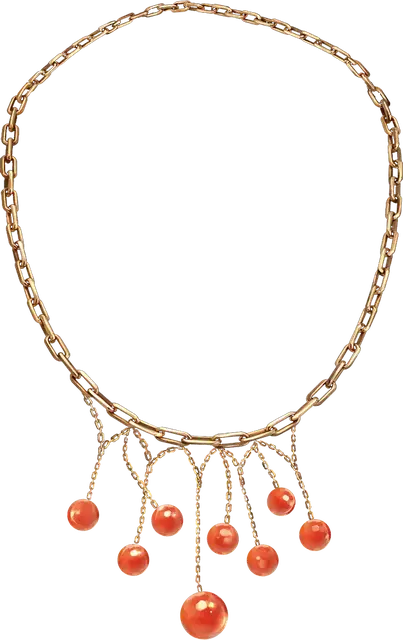

Ожерелье огненных шаров
Necklace of Fireballs
Чудесный предмет, редкий

Рекомендованная стоимость 251-2 500 зм
На этом ожерелье висят 1к6 + 3 бусины. Вы можете действием оторвать одну бусину и метнуть её на расстояние до 60 футов. Достигнув конечной точки, бусина детонирует как заклинание огненный шар [fireball] 3-го уровня (Сл спасброска 15).
Вы можете метнуть одним действием сразу несколько бусин или даже всё ожерелье. При этом увеличьте уровень огненного шара на 1 за каждую бусину после первой.